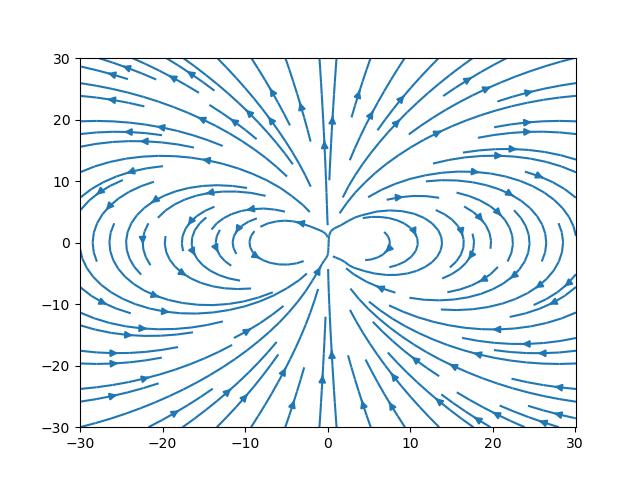

Demo
import matplotlib.pyplot as plt
import numpy as np
n = 30
x = np.linspace(-30, 30.1, n)
y = np.linspace(-30, 30.1, n)
bx = np.zeros([n, n])
by = np.zeros([n, n])
mu = [0, 1]
def field(x, y):
r = np.sqrt(x**2 + y**2)
vx = (3*(mu[0]*x+mu[1]*y) * x/(r**2) - mu[0]) / r**3
vy = (3*(mu[0]*x+mu[1]*y) * y/(r**2) - mu[1]) / r**3
return vx, vy
X, Y = np.meshgrid(x, y)
vx, vy = field(X, Y)
plt.streamplot(x, y, vx, vy)
plt.savefig('magnetic-dipole.png')